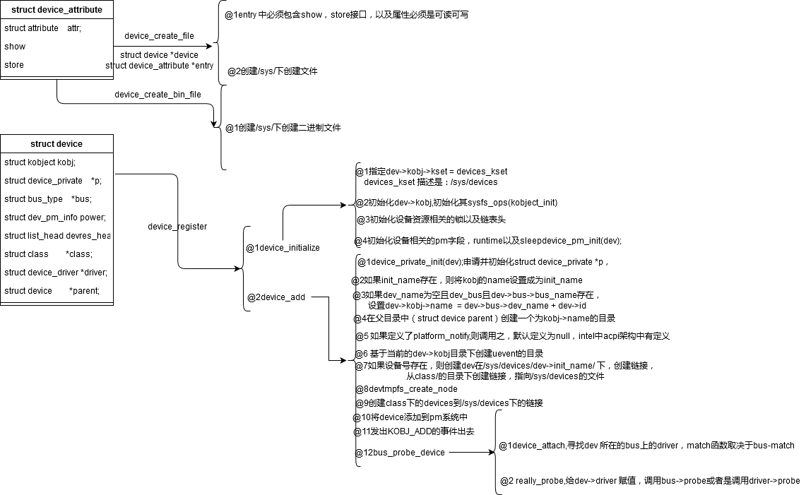

相关的文件:
linux-3.16.82\linux-3.16.82\include\linux\device.h linux-3.16.82\linux-3.16.82\drivers\base\core.c
相关的结构体
@1:
struct device_type {
const char *name;
const struct attribute_group **groups;
int (*uevent)(struct device *dev, struct kobj_uevent_env *env);
char *(*devnode)(struct device *dev, umode_t *mode,
kuid_t *uid, kgid_t *gid);
void (*release)(struct device *dev);
const struct dev_pm_ops *pm;
};
@2:
struct device_attribute {
struct attribute attr;
ssize_t (*show)(struct device *dev, struct device_attribute *attr,
char *buf);
ssize_t (*store)(struct device *dev, struct device_attribute *attr,
const char *buf, size_t count);
};
@3:
struct device {
struct device *parent;
struct device_private *p;
struct kobject kobj;
const char *init_name; /* initial name of the device */
const struct device_type *type;
struct mutex mutex; /* mutex to synchronize calls to
* its driver.
*/
struct bus_type *bus; /* type of bus device is on */
/*driver_register的时候会进行match，match之后会将driver = 指定的驱动程序，完成绑定动作*/
struct device_driver *driver; /* which driver has allocated this
device */
void *platform_data; /* Platform specific data, device
core doesn't touch it */
void *driver_data; /* Driver data, set and get with
dev_set/get_drvdata */
struct dev_pm_info power;
struct dev_pm_domain *pm_domain;
#ifdef CONFIG_PINCTRL
struct dev_pin_info *pins;
#endif
#ifdef CONFIG_NUMA
int numa_node; /* NUMA node this device is close to */
#endif
u64 *dma_mask; /* dma mask (if dma'able device) */
u64 coherent_dma_mask;/* Like dma_mask, but for
alloc_coherent mappings as
not all hardware supports
64 bit addresses for consistent
allocations such descriptors. */
unsigned long dma_pfn_offset;
struct device_dma_parameters *dma_parms;
struct list_head dma_pools; /* dma pools (if dma'ble) */
struct dma_coherent_mem *dma_mem; /* internal for coherent mem
override */
#ifdef CONFIG_DMA_CMA
struct cma *cma_area; /* contiguous memory area for dma
allocations */
#endif
/* arch specific additions */
struct dev_archdata archdata;
/*设备节点，不为空时，表明有对应的device Tree*/
struct device_node *of_node; /* associated device tree node */
struct acpi_dev_node acpi_node; /* associated ACPI device node */
dev_t devt; /* dev_t, creates the sysfs "dev" 存在devt的时，会在/dev下创建节点*/
u32 id; /* device instance */
spinlock_t devres_lock;
struct list_head devres_head;
struct klist_node knode_class;
struct class *class;
const struct attribute_group **groups; /* optional groups */
void (*release)(struct device *dev);
struct iommu_group *iommu_group;
bool offline_disabled:1;
bool offline:1;
};
@4
struct device_private {
struct klist klist_children;
struct klist_node knode_parent;
struct klist_node knode_driver;
struct klist_node knode_bus;
struct list_head deferred_probe;
struct device *device;
};
相关的API
extern int device_create_file(struct device *device,
const struct device_attribute *entry);
extern void device_remove_file(struct device *dev,
const struct device_attribute *attr);
extern bool device_remove_file_self(struct device *dev,
const struct device_attribute *attr);
extern int __must_check device_create_bin_file(struct device *dev,
const struct bin_attribute *attr);
extern void device_remove_bin_file(struct device *dev,
const struct bin_attribute *attr);
/*定义在core.c中，实际会类似于device_register*/
struct device *device_create(struct class *class, struct device *parent,
dev_t devt, void *drvdata, const char *fmt, ...)
device_create_file分析:
extern int __must_check device_register(struct device *dev);
extern void device_unregister(struct device *dev);
extern void device_initialize(struct device *dev);
extern int __must_check device_add(struct device *dev);
extern void device_del(struct device *dev);
